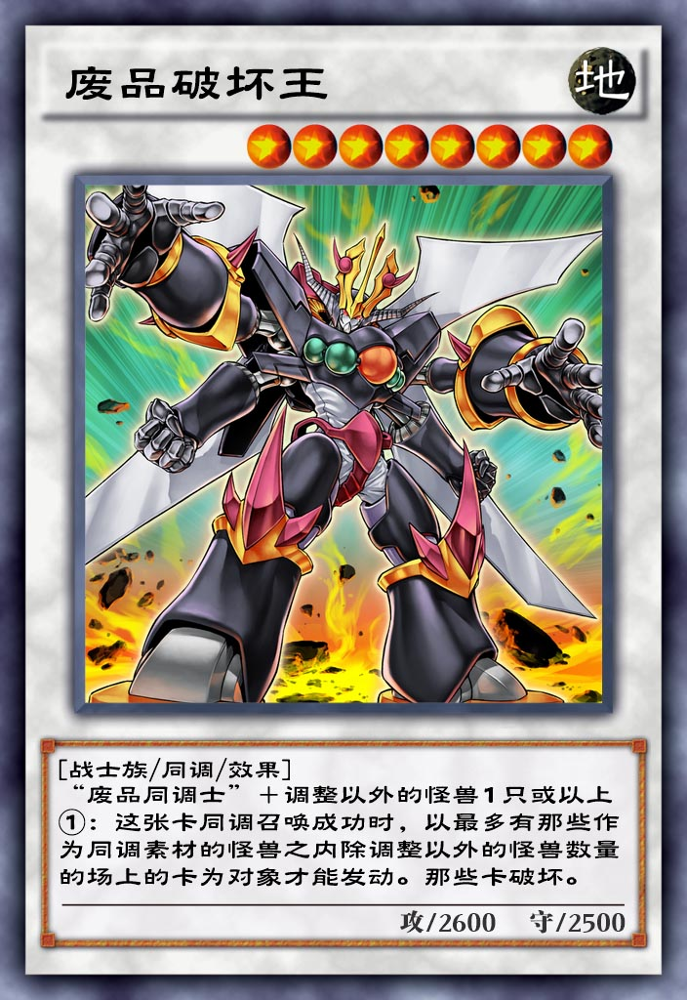

| 中文名 | 废品破坏王 |  |
| 日文名 | ジャンク・デストロイヤー | |
| 英文名 | Junk Destroyer | |
| 卡片种类 | 怪兽 效果 同调 | |
| 数据库编号 | 8860 | |
| 使用限制 | 无限制 | |
| 种族 | 战士 | |
| 属性 | 地 | |
| 星级 | 8 | |
| 攻击力 | 2600 | |
| 防御力 | 2500 | |
| 罕见度 | 超凡 | |
| 获取方式 | 钻石星尘 | |
| 链接 | ||
百鸽 Yu-Gi-Oh! Wikia |
||
| 效果 | ||
「废品同调士」＋调整以外的怪兽1只以上 ①：这张卡同调召唤成功时，以最多有那些作为同调素材的怪兽之内除调整以外的怪兽数量的场上的卡为对象才能发动。那些卡破坏。 |
||
| 调整 | ||
[废品破坏王] <ジャンク·デストロイヤー> [10/03/21] ●「废品同调士/ジャンク·シンクロン」＋调整以外的怪兽1只以上 ◇『「废品同调士/ジャンク·シンクロン」』的部分不能用当作「废品同调士/ジャンク·シンクロン」同名卡使用的调整以外的怪兽 ●这张卡同调召唤成功时，可以选择最多有作为这张卡的同调素材的调整以外的怪兽数量的场上存在的卡破坏。 ◇诱发效果（进入连锁）。 ◇任意发动。 ◇取对象效果。 |
||